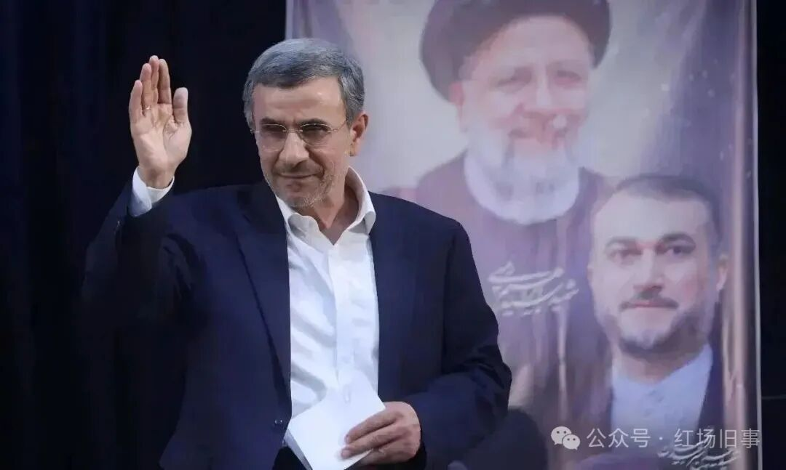
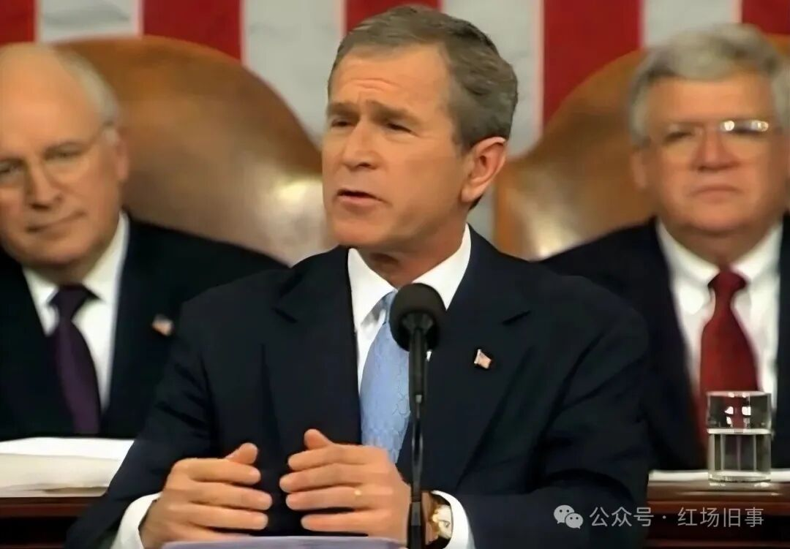
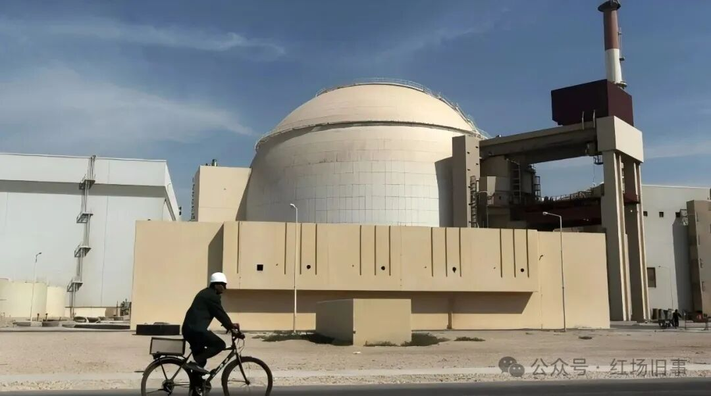
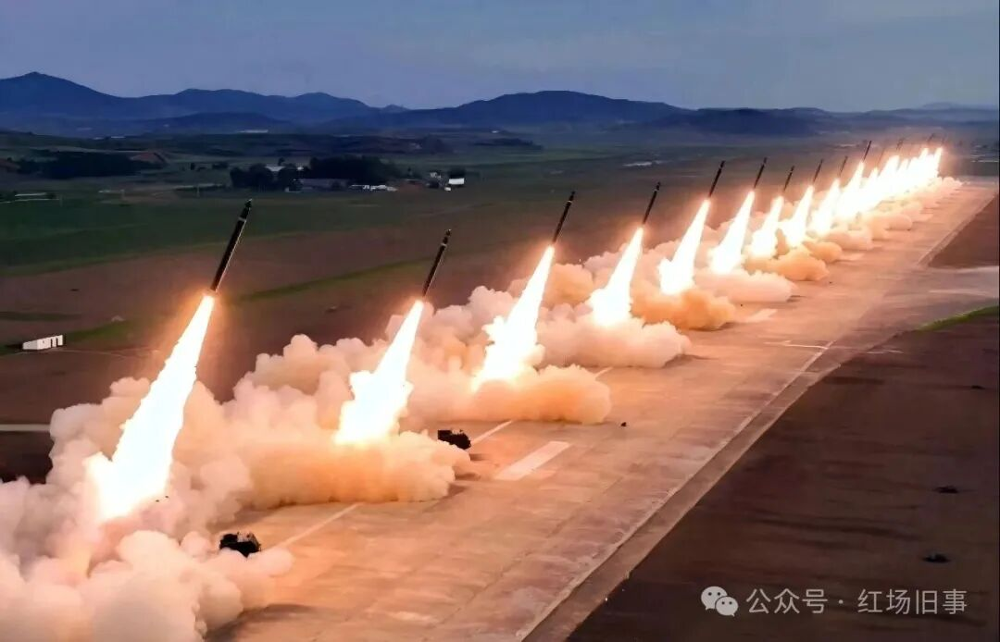

2002年8月，一条消息从德黑兰传到华盛顿：伊朗正在纳坦兹秘密建造铀浓缩设施，在阿拉克建造重水反应堆。爆料者是伊朗流亡海外的反对派团体“伊朗全国抵抗委员会”。国际社会为之震惊，美国随即对伊朗核计划提出“严重质疑”。三年后，一个更让西方坐立不安的人物登上了德黑兰的政治舞台。
一、2005：内贾德来了
2005年6月，德黑兰市长马哈茂德·艾哈迈迪-内贾德在总统选举中胜出。这位出身贫寒、留着不修边幅胡须的保守派，一亮相就带着鲜明的反美反以色彩。

当年8月，他刚上任就宣布恢复铀浓缩活动，英法德三国与伊朗的谈判就此破裂，“德黑兰宣言”宣告终结。2005年10月25日，内贾德在“没有犹太复国主义的世界”会议上发表演讲。面对数千名学生，他说：“以色列必须从地图上被抹去。”他称以色列是“伊斯兰世界脸上的瑕疵”，巴勒斯坦的新一轮袭击将会“摧毁”这个国家。这不是即兴发挥。几天后，伊朗宣布每年斋月最后一个周五为“圣城日”（耶路撒冷日），号召民众游行支持巴勒斯坦。同年12月，内贾德再放猛料：他公开称纳粹对犹太人的大屠杀是“神话”，建议将以色列迁移到欧洲或阿拉斯加。这番言论引爆国际舆论，联合国安理会五常随即决定将伊朗核问题提交安理会。
二、悬疑一：政治表演还是真实意图？
内贾德的言论如此激进，以至于美国参议院通过第292号决议，要求总统“以最强烈措辞彻底谴责”。但细看历史，疑问浮现：伊朗的对以态度，为何在内贾德这里突然转向？

在前任总统哈塔米的八年任期内，伊朗曾表现出减少敌意的迹象。伊朗官员曾表示，如果巴勒斯坦人愿意与以色列共存，伊朗可能不会反对。哈塔米任内，伊朗甚至主动与国际原子能机构合作，2003年签署了《不扩散核武器条约》附加议定书。内贾德上台后，风向骤变。这背后有两重算计。对内，他要巩固保守派基本盘。内贾德出身贫寒，靠“反美斗士”人设吸引底层民众，对以强硬是成本最低的政治动员。对外，他要争夺伊斯兰世界话语权。当时阿拉伯国家纷纷与美国交好，伊朗打出“解放耶路撒冷”旗帜，正是要抢占道德高地，瓦解阿拉伯阵营。所以答案是：真实意图与政治表演兼而有之。内贾德骨子里敌视以色列不假，但将其作为外交筹码、国内动员工具的用意同样明显。
三、2006：核危机升级
2006年1月，伊朗公开宣布恢复中止两年多的核燃料研究工作。3月，安理会通过主席声明，要求伊朗在30天内中止一切核活动。伊朗不为所动。2006年7月，六国外长决定将伊核问题重新提交安理会。12月，安理会通过第1737号决议，首次对伊朗实施制裁，包括冻结相关人员和企业在国外的资产、禁止向伊朗转让核技术。制裁没有让伊朗屈服，2006年4月，内贾德宣布伊朗已加入“拥有核技术的国家俱乐部”。2007年，国际原子能机构证实，伊朗已能在纳坦兹工厂进行铀浓缩活动。
四、美苏（俄）的立场分化
美国：从“邪恶轴心”到制裁总指挥
早在2002年1月，小布什就在国情咨文中将伊朗列为“邪恶轴心”之一。内贾德上台后，美国进一步收紧绳索。2005年，五角大楼已开始秘密制定对伊朗核设施的打击计划。据《泰晤士报》披露，以军在内盖夫沙漠模拟纳坦兹铀浓缩工厂进行突袭演练，美国暗示“不会挡道”。但伊拉克战争让美国深陷泥潭，国务卿赖斯开始转向“软硬兼施”，一面推动制裁，一面提出如果伊朗冻结核活动，美国将同意其加入世贸组织。但内贾德不买账：“任何压力、好处或威胁都不会使伊朗放弃自己的合法权利。”
俄罗斯：核保护伞的形成
莫斯科的态度截然不同。当西方制裁伊朗时，俄罗斯继续援建布什尔核电站——这是伊朗首座核电站，2006年完成燃料装载。

2007年，俄罗斯向伊朗交付核电站所需核燃料，同时宣布将向伊朗出售先进的S-300防空导弹系统。这套系统能有效拦截战机甚至巡航导弹，让美以的空袭计划陡增难度。为什么要保护伊朗？这里有精密的算计。经济利益是表面，布什尔核电站对俄罗斯“不是特别有利可图”，正如俄方人士所言，“更像是一种政治姿态”。地缘博弈才是核心：伊朗是俄罗斯在中东牵制美国的重要棋子，保住伊朗，就能让美国深陷中东泥潭。此外，核技术合作也是俄伊捆绑的手段——只要伊朗依赖俄罗斯的核燃料和技术，就不会彻底倒向西方。
五、以色列的生存焦虑
对内贾德的言论，反应最激烈的不是美国，而是以色列。外长沙洛姆称伊朗是一个“清楚而现实的危险”。以色列情报官员私下表示，2006年下半年是道“坎”——届时可确定伊朗是否决心开始提炼武器级钚。以色列的焦虑有其根源。国土狭小、人口仅600万，用美国军方的话说，是一个“一枚原子弹即可搞定”的小国。伊朗的“流星-3”导弹射程超过1200公里，足以覆盖特拉维夫。一旦伊朗拥有核武器，以色列的核威慑优势将荡然无存。

2005年至2007年，以色列军方多次演练远程奔袭伊朗核设施。但军事选项从未真正落地——因为俄罗斯的S-300，也因为伊朗核设施分散且部分深埋地下。
六、风暴的中心
2002年到2008年，是伊朗核危机最紧张的阶段。纳坦兹的离心机在旋转，布什尔的核电站拔地而起，内贾德的言论一次次激怒西方。回头看，这场风暴留下一个核心悖论：美国制裁伊朗，却无法阻止其核进程；俄罗斯保护伊朗，却又在中东保持战略灵活性；内贾德叫嚣“消灭以色列”，却又在2009年竞选连任时遭遇国内大规模抗议。内贾德的激进言论，究竟是意识形态的狂热，还是地缘博弈的筹码？答案可能两者兼有。但有一点可以确定：他将伊朗核问题推到了世界舞台的聚光灯下，也为后来的核谈判埋下了最长久的伏笔。
七、下期预告
2024-2025年，伊以冲突从“代理人”升级为“直接对射”。以色列空袭伊朗驻大马士革领事馆，伊朗首次从本土向以色列发射导弹。大国如何站队？下一集《领事馆遇袭与“真诺言”行动：红线被突破的那一刻》，伊朗为何打破几十年的“战略耐心”，选择直接报复？这是实力的展示，还是战略的失算？中东风云｜第三集 “鲜花工程”与核种子——美苏如何浇灌这段婚姻第6期 1949年苏联核爆震惊世界：谁偷走了曼哈顿计划的密码？
文字与图片版权归各自权利人所有；排版根据抓取内容整理。